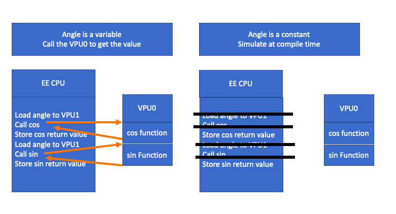

Debuggers and constexpr
I was looking through C++ papers and since 2010 (and maybe before) not one iso C++ paper has been submitted on debugging. So maybe now is a good time to think about how we should debug C++ in a new way.
C++ is getting harder to debug, and by debug here I mean to watch a bug in slow motion in a debugger. With C++ “constexpr all of the things” libraries and crazy smart optimizing compilers it would be nice to debug this code that should not exist. Can we debug constexpr functions with very little overhead? By constexpr here I mean functions that have been 100% removed from the EXE by any mechanism.
What if a constexpr function could optionally run on a virtual co-processor. Then you could set a breakpoint on this virtual co-processor code like a normal breakpoint. Every place you called this constexpr function you would have an option to step into this virtual co-processor code or by default you could step over and not run it at all. You don't really need to run this function since all of the side effects are already in the normal program.
This idea is from work I did for EA in the mid 2000s. I wrote the fastest Sin and Cos functions that ran on PS2's VPU0 co-processor. VPU0 was a CPU in its own right. It had 4k of instructions and 4 k of data + 16 16-bit integer registers and 32 128-bit floating point registers. The VPU0 was tricky to use VPU1 did most of the heavy lifting. (VPU1 did what would be called vertex shaders today.) VPU0's trick was it was tightly coupled with the main EE mips cpu. If I remember right the EE had one instruction to kick off a VPU0 program at some address and another one to sleep until the VPU was done. This was great you could load a lot of small little programs like Sin or Cos or other small little math functions and even kick them asynchronously then wait on them. But what if Sin or Cos in this case were given a constant parameter? With a modern compiler that could understand what both the CPU and VPU0 were doing the compiler could know it didn't need to call a VPU program to estimate some Taylor series to get the Sin or Cos value. It could just simulate this at compile time.
Now a short summary on the heart of any debugger, the breakpoint. A breakpoint is when the debugger switches one instruction into an "int 3" or other illegal instruction. When the CPU hits this int 3 an exception handler is called. The exception handler gathers all of the state from registers and saves everything, so you can continue where you left off. The CPU then idle loops waiting for the debugger to tell it to continue or trace to the next breakpoint or int 3 instruction. The debugger reads this saved state and combines it with the compiler's debug symbols and other type information to display the watch windows and call stacks.
The problem is with constexpr functions there is no instructions, no CPU or memory state to read or really anything to debug at all in the runtime. You can find the return value side effect of the constexpr functions but that is it, but you can’t tell why the value is the way it is. If you are trying to write a JSON or REGEX parser or you are debugging Taylor series in a constexpr Sin or Cos function reading what the compiler thought about in slow motion could be useful.
What if we replaced a constexpr's return value with the code needed to create this return value? We don't want to do this all of the time as that would slow down our program. What we want is 2 ways of running a constexpr function:
- A “step over” mode where we use the pre-calculated return value
- A “step into” mode where we run code on a virtual co-processor. Running in this mode has no side effects to the main CPU program, but it is useful to show the programmer how the return value was calculated in slow motion
On ps2 you could add an VPU0 illegal instruction and break in the debugger like any other ASM function. The only difference is you would get a mixed call stack showing both the EE and VPU0 registers and other state. It would be useful if we could set a breakpoint in this virtual co-processor and break somewhere in the constexpr function every time we called it and get a mixed CPU + virtual co-processor call stack.
There is one thing different then a VPU0 breakpoint. We don't always call the virtual co-processor like we would in the VPU0 case. We don't even want the code to load parameters etc... we only want to store the return value of the constexpr function. So, for virtual co-processor breakpoints, we will need to find all call sites and add a real CPU breakpoint int 3 there. The debugger would need a table to tell it instruction was a return value for a constexpr function, if we break here, we could either step over or step into the virtual co-processor function so we would need 2 types of break points. If this was a step into break point the debugger would interpret the constexpr function in slow motion on the virtual co-processor. The debugger maybe would software interpret each virtual co-processor instruction, scanning for VPU breakpoints. If you hit a VPU breakpoint it would stop and show the state of the real CPU and the virtual VPU. The runtime cost of this system would be zero (in your process anyways) unless you are running with a step into breakpoint at a call site of a constexpr function. Since the host debugger would run the virtual co-processor code even a small 8-bit embedded device with 512 bytes of ram could debug large constexpr functions.
How about a more detailed example with some code.
Let’s just say we gave the compiler an easy problem to solve. We call a lambda that all it does is return 40 twice and add it up like the code below.
using tcallback = int(*)();
int runCallBack(tcallback func)
{
return func() + func();
}
int main(int argc, char *argv[])
{
return runCallBack([]() {
return 40;
});
}
Hopefully the compiler can see through all of the abstractions and we should get some ASM generated like below. The return value of the constexpr is at instruction address 0x8000.
main: # @main
0x8000: mov eax, 80
ret
Our goal is if we set a breakpoint in the runCallBack function an int 3 would be written over the mov eax, 80 and the debugger would track this as a step into breakpoint. Then at the position we set the break point in the runCallBack function a virtual co-processor int 3 like break instruction would be added.
main: # @main
0x8000: int 3 // was mov eax, 80
ret
We would need some type of table of instructions address to virtual co-processor code address to know how to jump from CPU space to the virtual co-processor space. We would also need some state in the debugger telling it that the breakpoint at address 0x8000 was a step into break.
0x8000: 0xffffffff60000000 // so we know that 0x8000 was a call to 0xffffffff60000000
0x9000: 0xffffffff80000000
0xA000: 0xffffffffB0000000
Note that virtual co-processor addresses are not CPU addresses and should not be addressable by the CPU as they don’t really need to exist to make the program run. They are like addresses in another process space. So, you would probably make it an illegal address.
So, at virtual co-processor address 0xffffffff60000000 would be the program the compiler rightly optimized out but that could be interpreted by the debugger. Maybe it would look like the code below.
0xffffffff60000000:
mov edi, offset main::$_0::__invoke()
jmp runCallBack(int (*)())
main::$_0::__invoke(): # @"main::$_0::__invoke()"
mov eax, 40
ret
runCallBack(int (*)()): # @runCallBack(int (*)())
push rbp
push rbx
push rax
mov rbx, rdi
call rdi
mov ebp, eax
call rbx
add eax, ebp
add rsp, 8
pop rbx
pop rbp
ret
This virtual co-processor code does not have to be intel instructions it could be clang IR or JVM or any other instruction set. When you call into this virtual co-processor ASM you would just make sure that no state could leak out. So, the virtual co-processor acts like it was running on another virtual computer.
The virtual co-processor ASM code would be there so you can set the breakpoints and see changes in state in the virtual co-processor in slow motion. If you wanted to break just in between the 2 lambdas no problem. Just set your virtual co-processor breakpoint at that virtual co-processor ASM location and also set a real int 3 breakpoint at each call site so the debugger can switch to the interpreted code to search for the virtual co-processor breakpoint.
The example above is a simple leaf function. Can it work with inline wrapper functions? Maybe but it gets harder.
I have seen inline functions come and go while working on clang compiler-based games. Sometime inline functions of these types will show up in the debugger's call stacks and other versions of the compiler they will disappear again. So I assume I am not the only one thinking about this problem. They seem to be doing it by looking at the current program address if you are no longer in the current function you must have called a new function. This is an interesting idea. This would need some type of static analysis to see how many inline functions deep you are from a real function.
Mostly I don’t want these small inline functions in the debugger but sometimes it would be nice to see them. It would be very nice to set breakpoints on these wrapper functions and being able to choose this at runtime dynamically might be a good solusion.
So, let’s say we have a new function dowork that can’t be inlined. But we have some small wrapper that does very little and so the compiler just removes this wrapper function like the code below.
extern int dowork(int a, int b);
int doworkwrapper(int a, int b)
{
return dowork(a+1,b+3);
}
int main(int argc, char *argv[])
{
return doworkwrapper(20,40) + doworkwrapper(10,30);
}
The optimized normal CPU ASM would look something like the listing below. I will use named locations, not hex addresses to make things easier to understand. So look for address labels like "BeforeDoWork" and "AfterDoWork".
main: # @main
push rbx
BeforeDoWork:
mov edi, 21 // 20+1 parameters are mixed with the side effects of the inlined function
mov esi, 43 // 40+3 parameters are mixed with the side effects of the inlined function
call dowork(int, int)
mov ebx, eax
AfterDoWork:
BeforeDoWork2:
mov edi, 11 // 10+1 parameters are mixed with the side effects of the inlined function
mov esi, 33 // 30+3 parameters are mixed with the side effects of the inlined function
call dowork(int, int)
AfterDoWork2:
add eax, ebx
pop rbx
ret
With this example we can see a new problem more clearly. The parameters are mixed with the side effects of the inlined function. We expect to see 20 and 40 but see 21 and 43 instead.
If we tried to make a doworkwrapper virtual co-processor but still call dowork with it's posable side effects on the main CPU how does this work? The virtual co-processor would also have to call a main CPU functions some how. One way to pass constant parameters to a function on another CPU would be to write trampoline code to load the parameters then call the functions in question. This is what I was thinking for normal CPU to virtual co-processor calls. I did this so I didn't have to add any code to the main CPU memory space. For a virtual co-processor to main CPU this is different the trampoline code would have to be in the main CPU memory so this does not work with out changing the normal CPU memory. For now I let the virtual co-processor have instructions that can change the main CPU registers. This would mean virtual co-processor code can have side effects in the main CPU memory space but as of yet I don't think I need the side effects the other way around.
We will need to not call the dowork function twice so, we will set a breakpoint before the parameters were read and make the virtual co-processor function return after these side effects with the trampoline code. The goal is to ignore the optimized mixed parameters values and load the unchanged value instead. Then return to the spot after the all of the side effects of the inline function. This is easy enough for me as a human, how difficult this is for a compiler is an open question.
Like before you would need some type of side table that tells you when and how to jump into the virtual co-processor functions (and you would need some state to say if you wanted to or not in the debugger). In this case the return address of the virtual co-processor function would not be the same as the address of the call as you want to return back after the side effects of the inlineing. At least in this simple version I was able to generate trampoline code that did this by hand.
Here is the normal CPU to virtual co-processor optional jump table.
BeforeDoWork: VCPBeforeDoWork
BeforeDoWork2: VCPBeforeDoWork2
Finally below is the the virtual co-processor trampoline code and debugable function ASM. You can see how there is jmp statements to jump after the inline side effects. You can see the virtual co-processor wrapped doworkwrapper has normal CPU side effects.
VCPBeforeDoWork:
mov edi, 20
mov esi, 40
call doworkwrapper(int, int)
mov ebx, eax
jmp AfterDoWork
VCPBeforeDoWork:
mov edi, 10
mov esi, 30
call doworkwrapper(int, int)
jmp AfterDoWork2
doworkwrapper(int, int): # @doworkwrapper(int, int)
add NormalEdi, edi, 1 # side effect changes a main CPU register
add NormalEsi, edi, 3 # side effect changes a main CPU register
NormalCall dowork(int, int) # Illegal break so the CPU can return to virtual co-processor function?
ret
You can also see the need to call the normal CPU function dowork. If a virtual co-processor function calls a normal function you would need some trick to return back into the virtual co-processor memory space. If the virtual co-processor addresses, are bad addresses, to the main CPU you can handle these returns with a virtual memory error handler to pop back to the virtual co-processor side. The virtual co-processor state like registers etc... would have to have some life time. If you called a virtual co-processor on some hardware thread then you would have to keep all state for this virtual co-processor until you returned from this function. You would reuse this virtual co-processor state if you called a normal->virtual co-processor->normal->virtual co-processor recursive set of calls.
I don't think this idea would solve all of C++'s current debugging problems. Debuggers are getting harder to use because compilers are getting better at reordering things. I don’t think this idea can help with reordering problems. But with our current directions of adding meta classes and pushing more calculation to compile time, we need a way for us humans to slow things down so we can read each other’s code. Maybe some system like this to jump in and out of runtime and compile time would be useful.
What to do with side effects like printing. Maybe virtual co-processor code should have no side effects just like constexpr code now. Maybe virtual co-processor code can jump back to CPU code to call print or do file IO. To me a call to a virtual co-processor function looks like a list of CPU instructions that does all of its side effects. With some trampoline code maybe we could just hop over these side effects and have the virtual co-processor do them.
Unfortunately, I have no idea how to work on something like this. I don’t see anyone letting me spend my day job time on this. So likely this will stay just an idea, but it was fun to think about this.